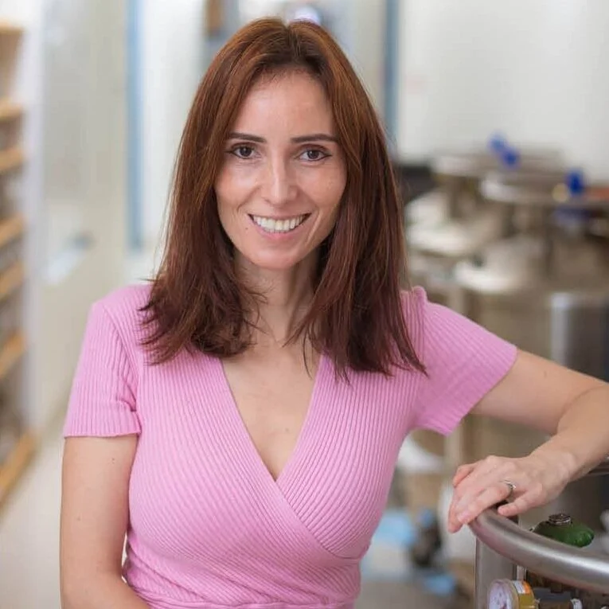

Principal investigator
Silvi Rouskin, Ph.D.
Assistant Professor, Department of Microbiology · Harvard Medical School
Silvi's lab studies how RNA folds in living cells, how the same sequence can adopt multiple structures, and how those alternatives shape viral biology, splicing, and disease.